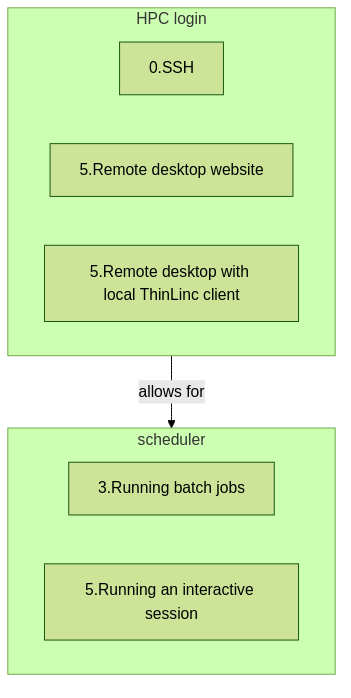

Introduction R
Prefer this session as video?
See this YouTube video, to see this session as a video.
see a first overview of the R programming language
see the overview of the course
hear about ‘the tarball with exercises’
Teaching goals are:
Learners have seen an overview of the course
Learners have seen an first overview of the R programming language
Priors:
What is R?
What are features of R?
What are R packages?
What is the R interpreter?
What is RStudio?
Course learning objectives
use the module system to load R
use the module system to load site-installed R packages
find out which versions of R and packages are installed
run R scripts
write a batch script for running R
install R packages from CRAN
see how to install other R packages yourself
start batch jobs
run RStudio
on the NAISS clusters COSMOS, Dardel, Kebnekaise, Rackham and Tetralith.
Course non-goals
improve R coding skills
use R on other HPC clusters
transfer files (tip: see [the NAISS ‘File transfer’ course](https://uppmax.github.io/naiss_file_transfer_course/))
First overview of R
R is a programming language for statistical computing and data visualization (from Wikipedia).
![flowchart TD
subgraph r[R]
r_interpreter[the R interpreter]
r_packages[R packages]
r_language[the R programming language]
r_dev[R software development]
rstudio[RStudio]
interpreted_language[Interpreted]
cran[CRAN]
end
r_language --> |has| r_dev
r_language --> |is| interpreted_language
r_language --> |uses| r_packages
interpreted_language --> |done by| r_interpreter
r_packages --> |maintained by| cran
r_dev --> |commonly done in| rstudio](../_images/mermaid-501f0d735ba257caa2d5486c40d5fedd7c310f21.png)
The main general R resources are:
R is used in many NAISS centres:
Schedule

![flowchart TD
subgraph r[R]
r_interpreter[1.the R interpreter]
r_packages[2.R packages]
r_virtual_environments[2.R virtual environments]
r_language[1.the R programming language]
parallel_and_multithreaded_functions[3.Parallel and multithreaded functions]
r_dev[5.R software development]
rstudio[5.RStudio]
ml[4.Machine learning]
interpreted_language[1.Interpreted]
cran[1.CRAN]
end
subgraph modules[modules]
r_module[1.R module]
r_packages_module[2.R_packages module]
rstudio_module[5.RStudio module]
end
r_language --> |has| r_dev
r_language --> |is| interpreted_language
r_language --> |uses| r_packages
interpreted_language --> |done by| r_interpreter
r_packages --> |maintained by| cran
r_packages --> |isolated by|r_virtual_environments
r_language --> |allows| parallel_and_multithreaded_functions
r_language --> |provides for| ml
r_dev --> |commonly done in| rstudio
r_interpreter --> |loaded by|r_module
r_packages --> |loaded by|r_packages_module
rstudio --> |loaded by|rstudio_module
rstudio_module --> |automatically loads latest| r_packages_module
r_packages_module --> |automatically loads corresponding version of| r_module](../_images/mermaid-c081be02393d3ca69135d5abed0b9f3c565a474f.png)
Exercises used in the course
The course uses a so-called tarball files with exercises as used in this course.
See here how to get and decompress it.
In the ‘Load and run R’ session, there is the time to do so.